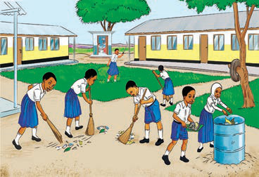
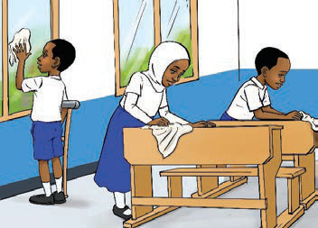
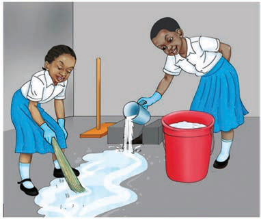
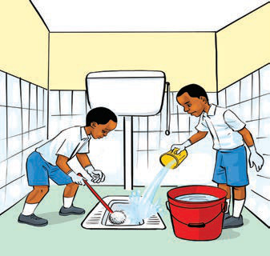

Observe the following pictures or listen to their descriptions, then answer the questions that follow.

(a)Pupils are sweeping the school yard and picking up rubbish. One girl is putting trash into a bin.
(b)Children are cleaning the classroom. They are wiping the windows and desks.
(c)Two girls are cleaning the floor. One pours water while the other sweeps the water away.
(d)Two boys are cleaning a toilet. One is scrubbing the floor while the other pours water.Questions
1. What actions are taking place or described in pictures a up to d?
2. Why is it important to keep the toilet clean?
3. Why do we wash our hands with clean water and soap after cleaning the environment?
Read the following case study, then answer the questions.
Chausiku is a Standard Two pupil at Upepo Primary School. One day, she had a high fever and was taken